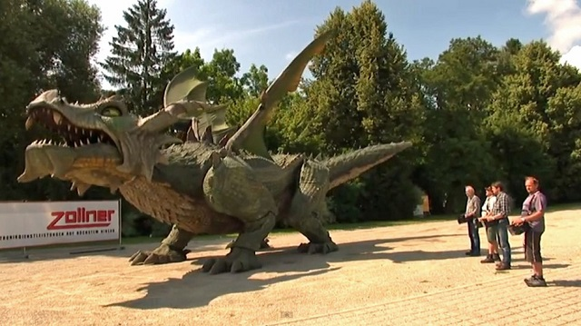

Didžiausio vaikštančio roboto ilgis yra 15.72 metrai, plotis 12.33 metrai, aukštis 8.20 metrų. Robotas buvo sukurtas Vokietijoje, autorius ZOLLNER ELEKTRONIK AG. Rekordas įregistruotas 2012 rugsėjo 27 diena.
